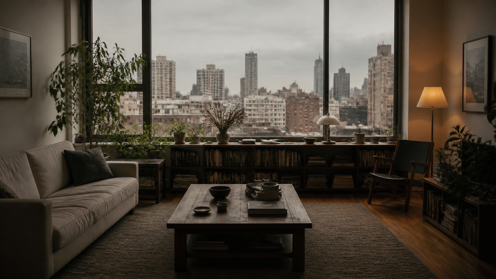

材料求真
确认事实、冲突与来源边界
SENSE DECK / DEFAULT SYSTEM
把观点、证据、结构与视觉资产组织成一套可交付、可复用、可验证的演示系统。
FROM SOURCE TO DELIVERY
确认事实、冲突与来源边界
先写判断，再组织证据
让每页只承担一种语义任务
图片、图解与数字各司其职
在真实浏览器里复核表达

SEMANTIC INTERMEDIATE LAYER
一句话说明为什么
数据、案例、引用
字体、网格、影像
导航、备注、编辑
CINEMATIC IMAGE LOGIC
保留灯具与窗景的质感
暖色只服务于局部情绪
主体清楚，背景保留层次
质感不能覆盖结构问题
MULTI-VIEW ASSET SYSTEM
建立空间关系
保留人物轴线
补充行为细节
说明动线与尺度
QUALITY CONTROL LOOP
以听众视角检视
定位真实问题
回到正确层级
保持结构一致
沉淀可复用经验
更新模板与技能
镜头语言、节奏、论证顺序
光影、色彩、构图、质感
比例、裁切、尺寸、连续性
导航、响应式、控制台、导出
DIRECTIONAL THINKING / SYSTEMATIC EXECUTION
先归因，再修正；
让真实结果反向训练系统。
下一次生成不从空白开始，而从已验证的方法开始。